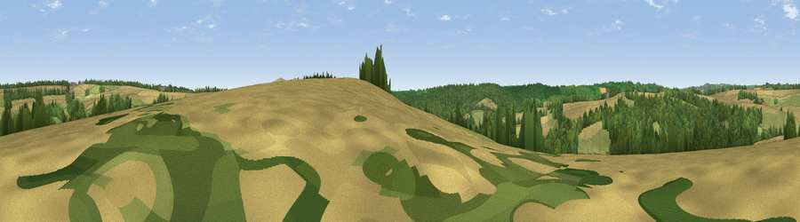

Viewpoint near Compton Abdale
#36556 in England · top 72% of its area beats it · near Compton AbdaleThe view, rendered

A 360° render of this exact spot computed from the terrain model, tree cover and land cover — summer colours, afternoon light, calibrated against photographs of famous viewpoints. Real trees, hedges and buildings will differ in detail.
The panorama
Grey silhouette: terrain skyline in each direction (720 bearings, Earth curvature and refraction included). Dashed green: skyline with trees (+15 m) and buildings (+8 m) as obstacles. Blue strip: how far the ground is visible on each bearing.
Where the view opens
Wedge length = distance to the farthest visible ground on that bearing (vegetation-aware). Rings at 10, 25 and 50 km.
What fills the view
43% woodland · 30% cropland · 27% grassland
Angular shares of the visible panorama (visual magnitude), not map area. Landscape diversity 0.47 (0–1 Shannon).
Key numbers
More beautiful places nearby
The staircase of upgrades: each row has a higher view potential than everything closer. Driving times are estimates from straight-line distance, calibrated against real road routing — check an actual route before setting out.
| Place | Direction | Drive | Score |
|---|---|---|---|
| Pen Hill | NNE · 4 km | ~8 min | 39.0 |
| Viewpoint near Yanworth | SSE · 4 km | ~9 min | 44.0 |
| Chedworth Beacon | SSW · 4 km | ~9 min | 47.7 |
| Viewpoint near Withington | W · 4 km | ~10 min | 61.0 |
| Pen Hill | WSW · 7 km | ~15 min | 66.4 |
| Viewpoint near Charlton Kings | WNW · 8 km | ~17 min | 70.0 |
| Viewpoint near Prestbury | NW · 9 km | ~18 min | 72.3 |
| Viewpoint near Prestbury | NW · 10 km | ~20 min | 73.0 |
51.84235, -1.91903 · source: screening · position refined by local search. Computed location — check access rights before visiting.